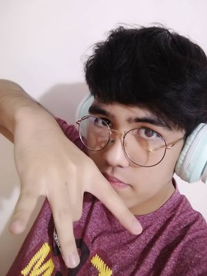

Introduction
Basic Information
Institution Name: Badjao Community
Address: Matina Aplaya, Davao City
Contact Person/s: Ms. Lolita/Melody Adjari
Contact Number/s: 0928-3499398; 09057264137
Number of Families: 170
The important data we gathered about the Badjao Community is that they are facing poverty and discrimination. This affects their daily life and health as they are not able to buy food and other supplies needed, and cannot afford to go to school. As well as being discriminated against by other people. By gathering further Information about their culture, livelihood, and the problems in their daily life. Through this, we gathered pieces of information about their lack of needs in their daily life. After that, we found out that they are in a crisis where they can’t afford to buy food and other supply needs even going to school and health examinations due to a lack of money. As we further gathered this information, we were able to connect the pieces of information about the Badjao Community. We find it essential since the data holds the information about Badjao Community and the issues/problems they have encountered. Furthermore, as we continue this research, we can use this data in making decisions and in planning what we will do to support the Badjao Community. Another data we gathered is about why they get discriminated. They Often Get Discrimination Because of their poverty and we to help them. Lastly, By Helping them we can change the perception of everyone about them.


Our project is about the Badjao Community and our goal is to help solve or address the problems the Badjao Community is experiencing.
The programs in our project that can help the Badjao community are education programs, food programs, and health programs. We would like to educate the Badjao people because they have a hard time learning things and cannot communicate properly with other people because they speak a different language and they can sometimes be overcome by their emotions. We also plan to give them the things they need, like food, clothes, shelter, and water. We also want to give the Badjao Community check-ups on their health to see how they are doing physically and mentally.
This Project Is Very Important because it will help change the perception and livelihood of the Badjao Community. It helps them have financial capabilities in order to help them supply their daily lives. The Project will Educate them in order for them to have knowledge on how to deal with the descrimination. It will improve their environment and their sustainability. With the implementation of this project with the help of other people we can be able to provide people of the Badjao Community with Proper & Nutritious Food that they can eat, Proper And Safe Shelters and Proper Knowledge Of How They Can Deal With Poverty And Discrimination

About the Web Designers
Mark Is A Nice But Goofy Person. He is Usually A Person Who Loves Talking, Playing Any Competitive Things And Loves Listening To Music. Most Of His Favorite Songs Are The Songs of the Late Great Juice WRLD….He Also Loves Playing Videogames. Some Of His Favorites Are GTA San Andreas, Minecraft, NBA2k, Marvel`s Spiderman 2018 and many more. He Is tall and a Handsome human being. He is really grateful for his groupmates specifically Andres Guarin, Rodel Calape Saliot, Jed Edillon And Zach Espolong.